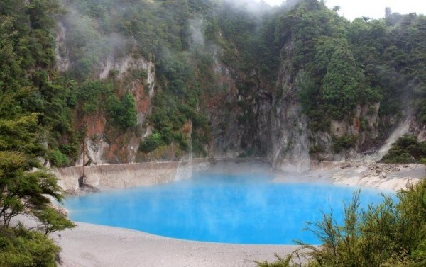
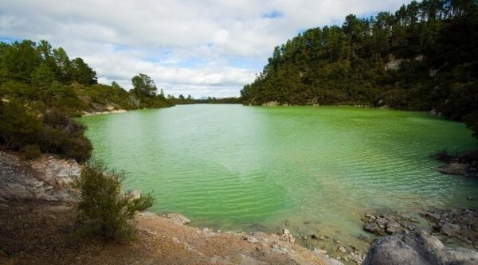
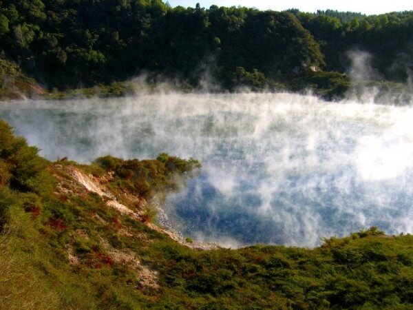
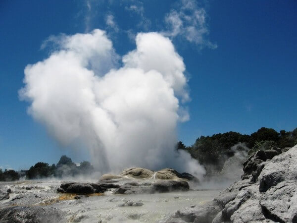
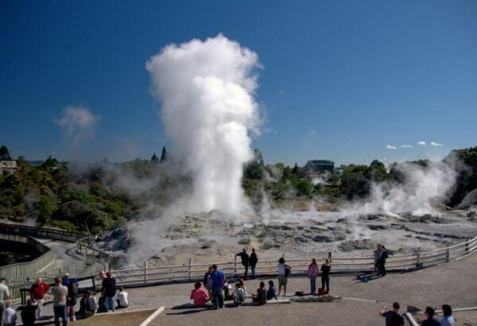
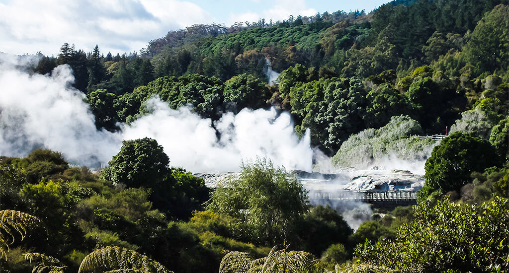
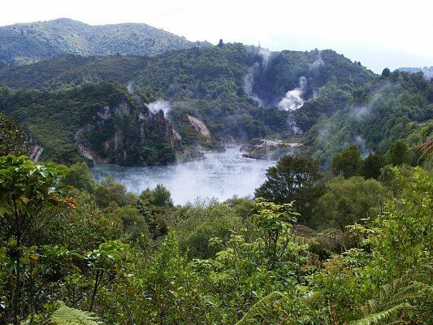
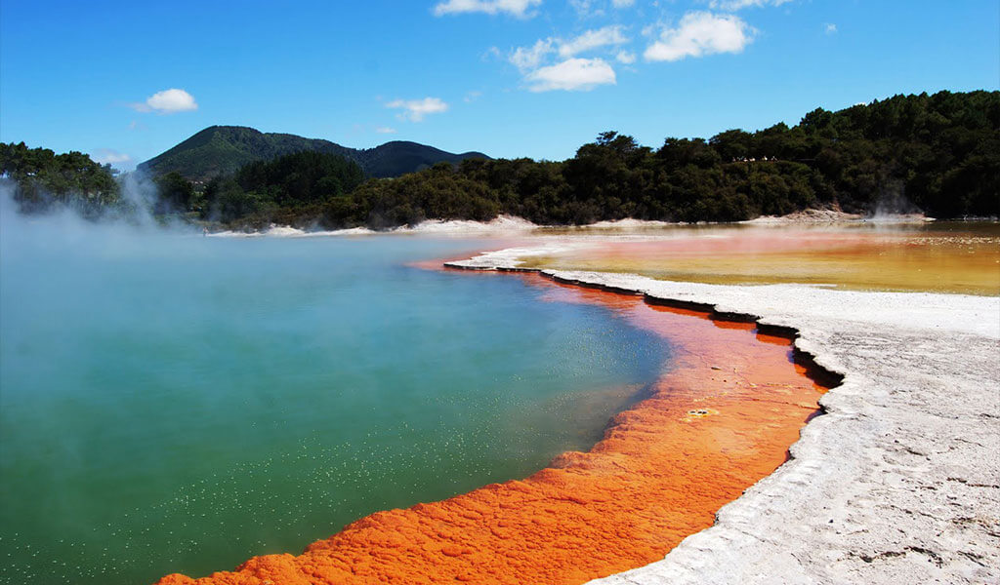

Долина гейзеров Ваймангу является одной из немногих в мире гидротермальных систем, начало которой можно установить с точностью до дня. 10 июня 1886 года мощнейшие подземные толчки разбудили всех жителей в округе. Сильнейший взрыв расколол верхушку горы Тараверы, и густые облака пара и дыма, озаряемые вспышками ослепительных молний, поднялись над горой на несколько километров. От этого огненного столба отделялось множество пылающих обломков и с плеском и грохотом падали в озеро. Уже совсем скоро оно превратилось в некое подобие ада, в котором клокотала жуткая смесь из пара и грязи. Из-за этого в округе были уничтожены огороды и поля, погибли вечнозеленые леса на склонах горы Тараверы.
Две маорийские деревни практически полностью затопил пылающий грязевой поток, а на городок Ваироа, находящийся по соседству, посыпался град вулканических пылающих бомб, принесший гибель 16-ти его жителям.
Но взамен погибших трав и деревьев здесь появились так называемые «термальные растения», способные расти на горячих камнях и в горячих болотах, да еще при этом выдерживать высокие концентрации ядовитых химических соединений, выходящих из недр вулкана.
Сегодня в долине Ваймангу расположен уникальный заповедник с несколькими озерами крупными гейзерами. Среди них особенно знамениты Голубое и Зеленое озера, прославившиеся необычным цветом воды. Голубое озеро выглядит так, словно в него выплеснули небо и забыли перемешать.

А Зеленое озеро смотрится как водоем из фантастических фильмов, снятых о технологических катастрофах будущего.

Возможно, необычный оттенок озерной воды в обоих водоемах связан с тем, что вода, поступающая в озера, вымывает из пород какие-то минеральные вещества, придающие ей новые цвета.
В долине Ваймангу есть еще озеро «Скворчащая сковорода», которое возникло в результате мощного извержения вулкана 1 апреля 1917 года. В результате извержения был уничтожен дом и погибли два местных фермера. На месте извержения образовался кратер, наполнившийся водой и превратившийся в озеро с горячей водой. Озеро постоянно пузырится углекислым и гидросульфатным газами, отчего оно выглядит кипящим и издает звуки скворчащего на огне масла.

Есть тут и знаменитые гейзеры. Один из них – гейзер Похуту, который выбрасывает фонтан до 30 метров высотой и является самым крупным в Новой Зеландии.

Другой знаменитый гейзер носит название «перья принца Уэльского». Раньше гейзер извергался каждые 20 минут, но теперь он активен почти все время.

Мощь природной силы такова, что именно в этой области была построена первая в стране геотермальная электростанция.

В Роторуа и на близлежащих территориях находится множество естественных бассейнов с грязью и термальной водой. Они образовались как результат уникального природного совпадения – наличия большого количества подземных вод и действия крупного активного вулкана. Раскаленная магма нагревает воду, которая находит выход различными путями: в виде спокойных источников, бурлящих водоемов, грязевых кратеров или выстрелов фонтанами-гейзерами.

В Уаи-о-Тапу можно полюбоваться на «Бассейн с шампанским»: вода в нем постоянно бурлит из-за поднимающихся пузырьков углекислого газа. На глубине температура воды источника составляет около 260°C, однако на поверхности из-за охлаждения воздухом она понижается до 73-75 ⁰C. Состав воды этого озера включает в себя большую концентрацию полуметаллов (сурьмы, окисей железа и тд), которые придают прибрежным участкам оранжево-коричневый цвет. Здесь же находится озеро «Палитра художника», которое буквально завораживает своими зелено-желто-голубыми переливами.
 ВВЕРХ